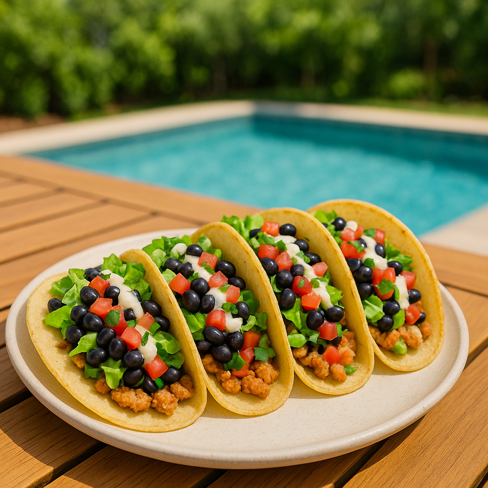

Grilled Caesar Chicken Tacos
Developed by Cook Anything Kitchen
Ingredients
Base
- 10 flour tortillas
- 1 lb ground chicken
- 1–2 tbsp taco seasoning or Greek seasoning
- 1–2 cups chopped romaine lettuce
- 1/2–1 cup homemade Caesar dressing
Optional Add-Ins
- 1 cup black beans, drained and rinsed
- 1 cup pico de gallo
Directions
-
Prep the tortillas:
Lay all 10 tortillas flat on a clean work surface.
-
Spread the chicken:
Divide the raw ground chicken evenly among the tortillas. Spread it into a thin, even layer over the entire surface of each tortilla.
-
Season:
Sprinkle taco seasoning or Greek seasoning evenly over the chicken layer on each tortilla.
-
Cook chicken-side down:
Heat a griddle or large skillet over medium-high heat. Place each tortilla chicken-side down onto the griddle.
Cook for 4–6 minutes, or until the chicken is fully cooked and the tortilla is lightly crisped.
-
Crisp the other side:
Flip the tacos and cook the tortilla side for 1–2 minutes to warm and lightly brown.
-
Add toppings:
Remove from heat. Top with chopped romaine and a drizzle of homemade Caesar dressing.
Optional: add black beans and pico de gallo.
-
Serve:
Serve immediately while crisp and hot.
Notes
- Spreading the raw chicken directly on the tortillas keeps the filling juicy and ensures even seasoning.
- Cooking chicken-side down creates a crisp, golden crust without drying out the meat.
- Add cold toppings after cooking to keep the romaine crisp and the Caesar dressing creamy.
Nutritional Information
Serving Size: 1 taco
Calories: 280
Fat: 14 g
Carbohydrates: 23 g
Protein: 12 g